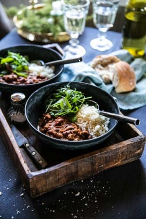

Chiligryta i tryckkokare med innanlår och bönor
För: 8 personer
- 1 kg innanlår av nöt
- 1 gul lök
- 3 röda chilifrukter
- 3 vitlöksklyftor
- 1 tetra svarta bönor (á 400g)
- 1 tetra kidneybönor (á 400g)
- 2 stjälkar blekselleri
- 1 dl strimlad, inlagd röd paprika
- 1/2 burk öl (á 33 cl)
- 1 burk krossade tomater (á 400g)
- 4 dl vatten
- 0,5 tsk ancho chilipulver
- 1 msk mörkt muscovadosocker
- 1 tsk malen koriander
- 1 tsk malen spiskummin
- 1 dutt kanel
- salt, peppar
- 1 msk majsstärkelse + 2 msk kallt vatten

- Skiva innanlåret – mot fiberriktningen – och skär det till strimlor. Använder du lövbiff strimlar du det vara. Stek lite i taget i smör, med salt och peppar, och ös över i en tryckkokare. Hacka löken och låt den mjukna i smör i stekpannan. När löken mjuknat, ha ner strimlad chili och finhackad vitlök. Ös över i tryckkokaren.
- Skölj svarta bönor och kidney och ha ner i tryckkokaren. Hacka selleri. Ha ner selleri och paprika i tryckkokaren. Slå på öl, krossade tomater, vatten samt alla kryddor. Blanda allt och kör tryckkokare i 1 timme. (Kör på högsta tryckkokar-läget och du använder en Crock Pot med tryckkokar-funktion.)
- Rör ut majsstärkelsen i en skvätt kallt vatten och rör sedan ner det i grytan. Låt grytan puttra upp så stärkelsen binder sig med såsen. Servera förslagsvis med ris, hackad ost, sallad (med gurka och tomat), tunnskivad lök, tortillabröd eller annat bröd samt yoghurt.